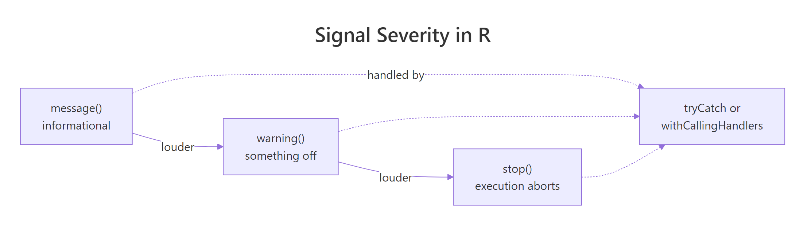
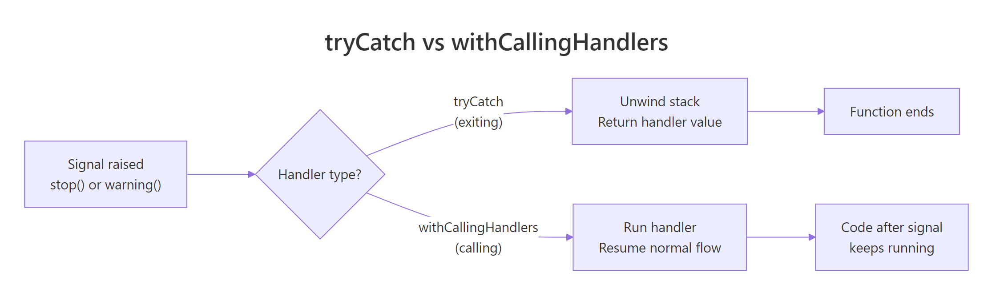
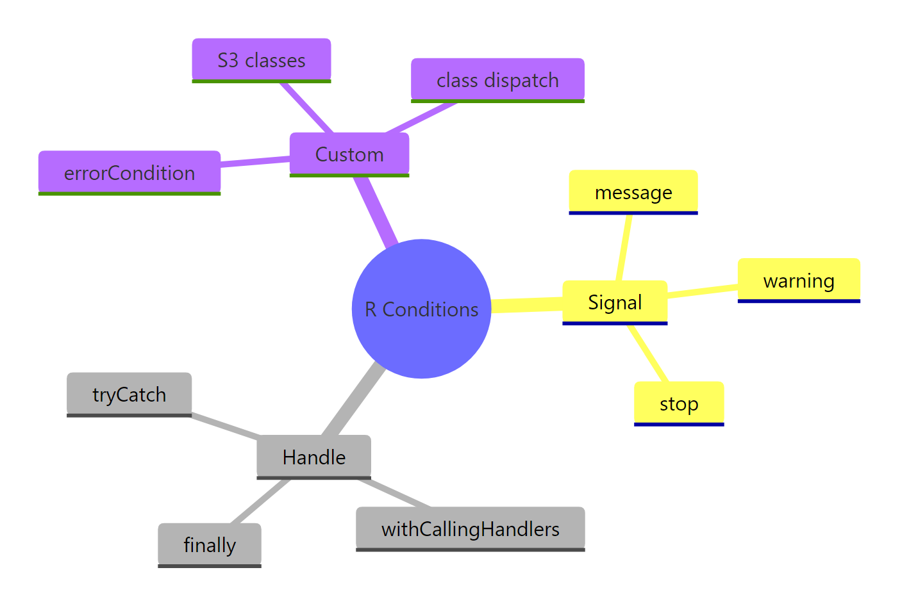

R's Condition System: Handle Errors, Warnings & Messages Like a Pro
R's condition system is the mechanism R uses to signal and handle errors, warnings, and messages while code is running. Unlike a simple try/catch in other languages, it lets you decide, per signal, per line, whether a problem should stop you, warn you, or just be noted.
Why do you need R's condition system at all?
Imagine a loop that processes a thousand rows and hits a bad one at row 43. Without a handler, the whole loop crashes and you lose the other 957 results. With one, you keep going and record the bad row. R's condition system is how you make that choice. Let's see it on a tiny example: a function that divides two numbers and a loop that should survive bad inputs.
The loop completes. Row 3 and row 5 would have crashed a naive version, but tryCatch() intercepted each stop(), returned NA, and let the loop move on. The signaler (safe_divide) doesn't know or care what the caller wants to do, it just raises the flag. The handler makes the policy decision.
Try it: Write ex_safe_log(x) that returns log(x) when x is positive, and use tryCatch() so a non-positive input produces NA_real_ instead of a crash.
Click to reveal solution
Explanation: ex_safe_log() signals an error for non-positive inputs. The wrapping tryCatch() catches those errors and substitutes NA_real_ so the whole vector still gets processed.
How do message(), warning(), and stop() differ?
R gives you three built-in ways to signal something unusual. They sit on a ladder of severity: message() is a gentle note, warning() flags a real problem that didn't stop progress, and stop() hard-aborts. Picking the right one is a communication decision, are you informing, cautioning, or refusing?

Figure 1: message(), warning(), and stop() form a ladder of increasing severity. All three can be handled.
Start with message(), the softest signal. It prints to the message stream (not stdout) and the function keeps running:
The message appears, then the returned string appears, execution never paused. Messages are the right tool for progress updates, "I'm using the default" notices, or debug tracing.
Next, warning(). A warning says "I did the thing you asked, but you should probably know about this":
The function still returns a vector. The caller gets the result and a heads-up that something was imperfect. That's the difference between a warning and an error.
Finally, stop() refuses to proceed:
stop() unwinds the call stack until something handles it. If nothing does, the whole top-level expression fails, that's what you see at the console when your script crashes.
capture.output(), you get the return value but not the message text. Use capture.output(..., type = "message") to capture the message stream instead.Try it: Write ex_check_age(age) that sends a message() if age < 18, a warning() if age > 120, and stop() if age < 0. Otherwise return the age unchanged.
Click to reveal solution
Explanation: Severity is chosen to match intent. A minor is information, not a problem. A suspiciously high age is real but not a deal-breaker. A negative age is nonsense, so the function refuses.
How does tryCatch() catch errors and warnings?
tryCatch() is the workhorse handler. You wrap an expression in it and pass named arguments, error, warning, message, finally, that say what to do when each kind of condition fires. The handler is a function that takes the condition object and returns a value that replaces the original expression's value.
Let's start with the error branch. A common pattern is "try to parse this, and give me a default if it fails":
The first call succeeds, so tryCatch() returns the parsed number. The second call triggers stop(); the error handler runs, returns -1, and that value replaces the whole expression. The condition object e (of class simpleError) carries a message field if you want to log the details.
You can catch warnings the same way. The handler replaces the result, which is useful when you want to treat "warn" as "fail":
The function coerce_numeric() (from earlier) raises a warning; strict_parse() catches it, logs the reason, and returns NA_real_. Notice we're using the condition's own message via conditionMessage(), the standard way to read what a signaler said.
tryCatch() dispatches on the first matching handler. Put narrow classes (like a custom validation_error) before the generic error handler, or your custom class will never be seen, the generic one will swallow it first.The finally argument runs no matter what, success, error, or warning. That makes it the right place for cleanup code:
The temp file gets deleted whether the body succeeds or fails. finally is how you guarantee resource cleanup in R.
Try it: Wrap parse_positive("bad") in a tryCatch() that returns 0 on error. The handler should also log a short note via message() so you can see it fired.
Click to reveal solution
Explanation: parse_positive("bad") raises an error. The error handler logs the reason via message() and returns 0, which becomes the value of the whole expression.
When should you use withCallingHandlers() instead?
tryCatch() and withCallingHandlers() look similar but behave very differently. A tryCatch() handler is an exiting handler: when it runs, the protected expression is abandoned and the handler's return value replaces it. A withCallingHandlers() handler is a calling handler: it runs, the handler returns, and the original expression keeps running from where it left off.

Figure 2: tryCatch() unwinds the stack and returns the handler's value. withCallingHandlers() runs the handler and resumes the original code.
Think of a car alarm. tryCatch() is the kind that kills the ignition when something's wrong, the car stops moving. withCallingHandlers() is the kind that beeps: you hear the warning, but the car keeps driving. For logging, auditing, or counting, you almost always want the beeping version.
noisy_sum() raises a warning. The calling handler appends the message to warn_log, returns, and then the original sum() expression resumes and produces 9. Both things happen: the log has the warning and the computation finishes.
There's a subtle catch, though. By default, a warning signaled via withCallingHandlers() still prints to the console after the handler runs, R considers the handler and the default print as independent steps. To silence the original warning after handling it, use invokeRestart("muffleWarning"):
Same result, but the warning is now captured in warn_log only, nothing extra prints. For messages, use invokeRestart("muffleMessage"). These "muffle" restarts are built into R's warning and message signaling; custom conditions won't have them unless you wire them up yourself.
withCallingHandlers() on an error will run your handler, then R still unwinds to the nearest tryCatch() (or the top level). Pair the two when you need "log and recover": outer tryCatch() for the recovery, inner withCallingHandlers() for the logging.Try it: Use withCallingHandlers() to count how many warnings noisy_sum() raises while still getting the sum.
Click to reveal solution
Explanation: The handler increments the counter on every warning and muffles the default print. noisy_sum() still runs to completion and returns 1, the sum after dropping the NAs.
How do you build custom condition classes?
So far every condition has been a generic simpleError, simpleWarning, or simpleMessage. That works, but it forces handlers to match on the error message string, which is brittle, locale-dependent, and breaks the moment you reword a sentence. The cleaner approach is to give each kind of condition its own class and match on the class.
R's conditions are just lists with a class attribute. The helpers errorCondition() and warningCondition() let you attach both a human message and structured fields that handlers can read programmatically.
bad_input_error() builds an error object with class bad_input_error (chained with error and condition by errorCondition()). validate() signals it via stop(). The handler sees an error and catches it like any other, but now the condition object carries field and value attributes the handler can inspect without parsing text.
The real win comes when you dispatch on the class. tryCatch() walks its named handlers and matches by S3 class, so you can handle bad_input_error differently from a plain error:
Both errors end up at NA_real_, but the handling is different. The custom class lets you pretty-print, log structured fields, or retry selectively, all without ever reading the message text.
Try it: Build a ex_timeout_error(elapsed) constructor that creates a condition of class timeout_error carrying an elapsed field. Signal it and catch it by class.
Click to reveal solution
Explanation: errorCondition() builds the classed condition in one line. The handler dispatches on the timeout_error class and reads the elapsed field directly from the condition object.
Practice Exercises
These combine ideas from earlier sections. Try them before looking at the solutions.
Exercise 1: robust_mean with logging
Write robust_mean(x) that returns the mean of a numeric vector. It must:
- return
NA_real_ifxis empty, non-numeric, or if the body itself fails (usetryCatch()) - log any warning it encounters into a caller-provided
my_warn_logvector (usewithCallingHandlers()inside thetryCatch()) - still return the computed mean when the input is valid
Click to reveal solution
Explanation: The outer tryCatch() converts any unrecoverable error into NA_real_. The inner withCallingHandlers() captures warnings into the log and lets the body resume so the mean still gets computed. invokeRestart("muffleWarning") keeps the console clean.
Exercise 2: validate_user with custom classes
Write validate_user(name, age) that signals a custom validation_error (classed) when an input is invalid. The condition must carry field (which input was bad) and reason (why). Write a caller that uses tryCatch() with class-based dispatch to pretty-print the error as "invalid <field>: <reason>".
Click to reveal solution
Explanation: Each failure mode raises the same class but carries different field/reason fields. The caller dispatches once on validation_error and reads the structured fields, no string parsing, no fragility if the message text changes.
Complete Example: a robust record loader
Let's put it all together. We'll build safe_loader(records) that walks a list of hand-built records (simulating parsed CSV rows), skips the bad ones, logs every warning, and returns both the good data and a list of per-row errors, the kind of function you'd actually ship in a data pipeline.
Three records survive, three are captured as structured errors, one warning is logged, and nothing crashed. The loader uses every piece of the condition system: a custom class (row_parse_error) for selective dispatch, withCallingHandlers() with invokeRestart("muffleWarning") for clean warning capture, and an outer tryCatch() that turns a bad row into a logged error instead of a crash. That's the shape of a production-quality R function that handles dirty data gracefully.
Summary

Figure 3: The full condition system at a glance: signal functions, handlers, and custom classes.
| Function | Purpose | Stops execution? | Typical use |
|---|---|---|---|
message() |
Informational note | No | Progress updates, default-value notices |
warning() |
Problem, kept going | No | Silent bugs you want surfaced |
stop() |
Error, refuses to continue | Yes | Unrecoverable problems |
tryCatch() |
Exiting handler | Unwinds the stack | Replace the value, recover, run cleanup |
withCallingHandlers() |
Calling handler | Resumes | Log, count, audit, without disturbing the result |
errorCondition() |
Build a classed condition | , | Structured, typed errors with fields |
invokeRestart("muffleWarning") |
Silence the default print | , | Inside a calling handler, after you've logged |
The key mental model: signaling is one thing (the function that finds the problem) and handling is a separate decision (what the caller wants to do about it). Picking the right signal, message, warning, stop, is a communication choice. Picking the right handler, tryCatch() vs withCallingHandlers(), is a control-flow choice. Custom condition classes make both ends less brittle.
References
- Wickham, H., Advanced R, 2nd Edition. Chapter 8: Conditions. Link
- R Core Team,
conditionshelp page. Link - rlang documentation,
abort(),warn(),inform(). Link - Peng, R. D., Mastering Software Development in R, §2.5 Error Handling and Generation. Link
- Advanced R Solutions, Chapter 8 exercises. Link
- tryCatchLog vignette, structured logging around tryCatch. Link
- Seibel, P., Beyond Exception Handling: Conditions and Restarts (ported to R by Wickham). Link
Continue Learning
- Writing R Functions, the anatomy of the functions where conditions get signaled.
- R Control Flow, how
if,for, andwhileinteract withstop()andbreak. - R Special Values,
NA,NULL,NaN,Inf, and when to return each from a handler.